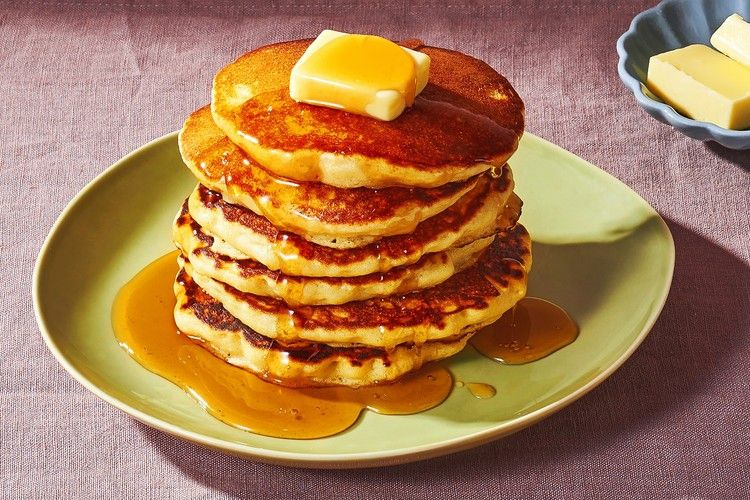

Old-Fashioned Pancakes

Description:
With this recipe you can make 8 servings of pancakes in 20 minutes.
Ingredients:
- 1 1/2 cups of all-purpose flour
- 3 1/2 teaspoons on baking powder
- 1 tablespoon of sugar
- 1/4 teaspoon of salt
- 1 1/4 cups of milk
- 3 tablespoons of butter, melted
- 1 egg
Method:
- Sift flour, baking powder, sugar, and salt together in a large bowl.
Make a well in the center and add milk, melted butter, and egg; mix until smooth.
- Heat a lightly oiled griddle or pan over medium-high heat.
- Pour or scoop the batter onto the griddle, using approximately 1/4 cup for each pancake.
- Cook until bubbles form and the edges are dry, about 2 to 3 minutes.
- Flip and cook until browned on the other side. Repeat with remaining batter.